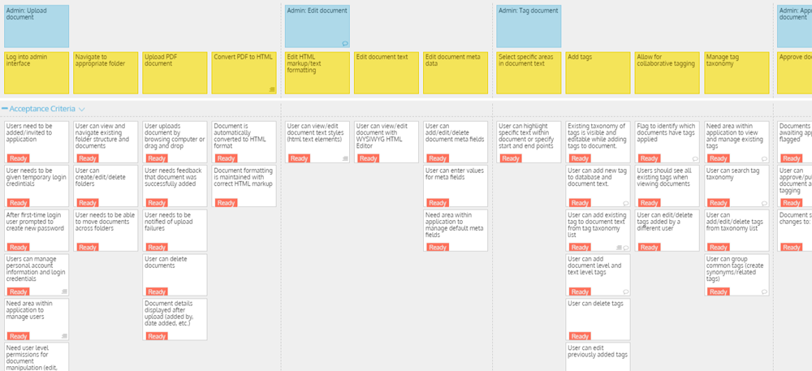
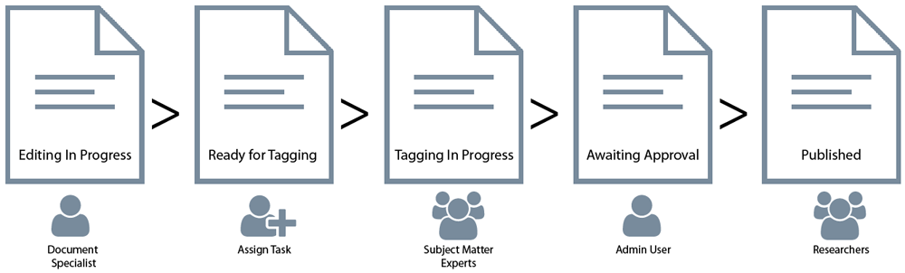

The Public Private Partnerships (P3) Research Database is an online repository of legal agreements across different jurisdictions and projects. This tool allows public and private partners to research similar development projects and can assist with drafting new contracts. The design of this database involved two parts. The first was to design a document management system allowing users to upload PDF documents, convert them to HTML format, add metadata, and tag content by subject-matter. The documents would then be approved and published to a publically accessible research tool allowing users to search and compare documents.
I conducted a series of interviews to better understand the problem this project was attempting to solve. My questions centered on understanding user goals, the context of use, and current methods of P3 research.
I identified the following primary user groups:
I conducted a competitor analysis to better understand the landscape and for design inspiration. The analysis involved a variety of different products including ones for PDF conversion/editing, annotating online documents, document management systems and legal research tools. I also researched product reviews to evaluate the strengths and weaknesses of each tool.
This research was shared with the product owners and development team and helped direct the final designs.
To help conceptualize the scope of the project and to document all necessary user stories I created a project story map. This was a very useful tool for documenting project requirements, identifying gaps, and reaching a shared understanding across stakeholders.
The first level of the story map represents epics (a larger user story often defined as a feature). The second level includes the user stories that make up each epic. And the third level includes the acceptance criteria to fulfill each user story. I also included an area for nice-to-have features. Doing this allowed us to prioritize requirements and create a strong MVP.
With multiple contributors and stages it was very important to understand the application workflow. Each document would go through different states before it was ready to be published to the front-end research tool. I worked with the development team and product owners to document the logic associated with each step. We then validated these business rules with potential users to validate the workflow.
Through the wireframes I was able to design user flows, navigation, and interactions. The wireframes went through various rounds of iteration and I worked closely with the development team to determine technical feasibility. The wireframes were annotated for clarity and all requirements documented in the story map were accounted for.
In our research we discovered different terminology across jurisdictions. This meant that researchers were likely to use different search terms depending on their location. To account for this we introduced the concept of "synonym terms". Within the taxonomy manager terms/tags could be identified as synonyms of one another. Once a document is tagged with one term the synonym terms are automatically applied as well.
As part of our research we had a subject matter expert manually tag an offline document. This example showed large areas of text about a broad subject and smaller areas within that text about more granular topics. This revealed a need for nested tagging capabilities. In our design a nested tag can be created and parent tags automatically carry over.
User management and workflow was very important in the document management system. Users would log in with different objectives and we wanted to keep the navigation as user-centric as possible. To accomplish this we implemented features such as different user permissions, the ability to assign tasks, a change management view to see all touchpoints on a document, user-level filters and notifications for tasks assigned.
Research revealed a broad range of expertise amongst researchers. The research tool needed to allow for both exploratory and direct searching methods. To accomplish this we implemented features such as search by topic, a universal search bar, search filters based on document metadata and a document comparison feature.
If you like what you see and want to chat please contact me!
+91 9159978147
Bengalore, India